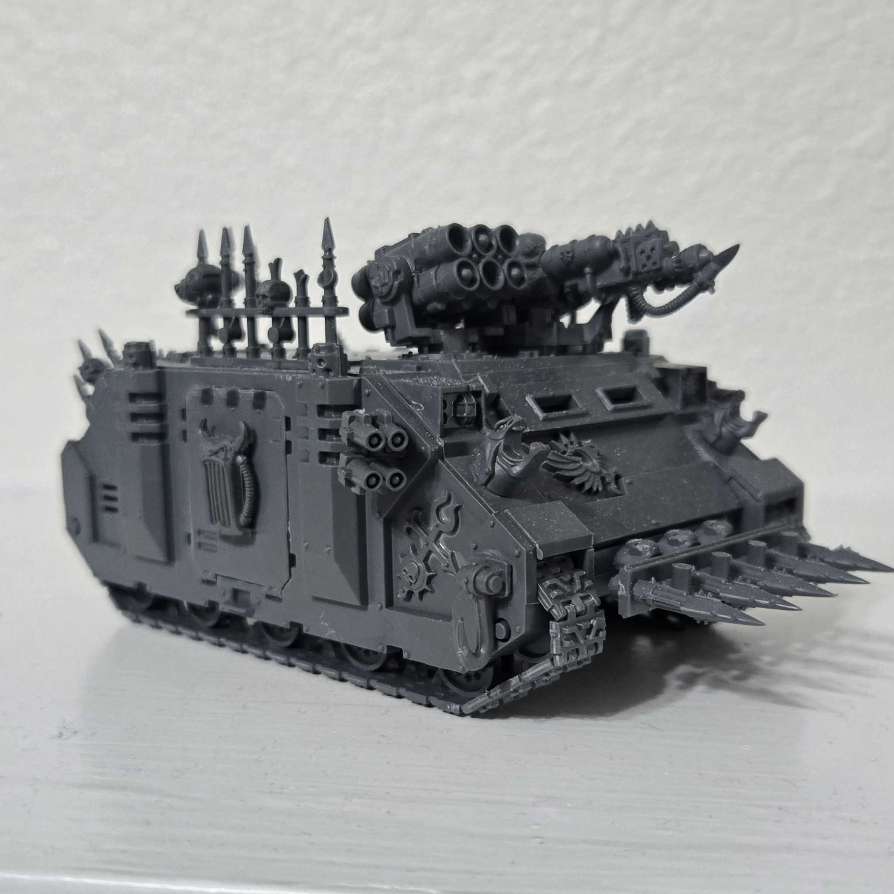
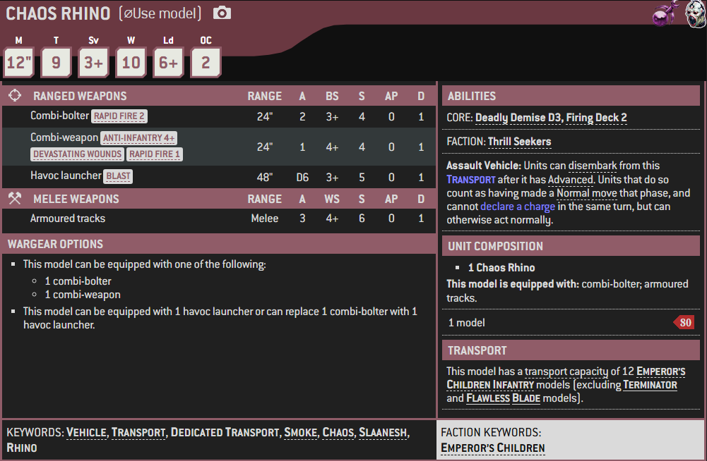

1 / 3

Miniature
2 / 3

Box Art
3 / 3

Artwork
The Rhino, or more formally, the Mars Pattern Rhino, is an Imperial armoured personnel carrier (APC) that is widely used throughout the galaxy by many different factions, though it is a mainstay vehicle of the Adeptus Astartes. It has provided safe transportation since the days of the Great Crusade, transporting its cargo of Space Marines swiftly and safely to the forefront of battle.
Robust and versatile, and able to resist the most hostile of environments, the Rhino has become the basic troop transport for Space Marine squads. It has also been used by many other trusted branches of the Imperial armed forces, including the Adeptus Mechanicus, Adepta Sororitas, Adeptus Arbites, Adeptus Custodes, and the forces of the Inquisition.
Over the years many Rhinos have been captured for use by Ork warbands, and, during their flight from the Imperium after the Horus Heresy, the Traitor Legions took their Rhinos with them into the Eye of Terror.
Altered by Chaos iconography and the power of the Ruinous Powers, these Chaos Rhinos are still deployed by many warbands of Chaos Space Marines in the present.
